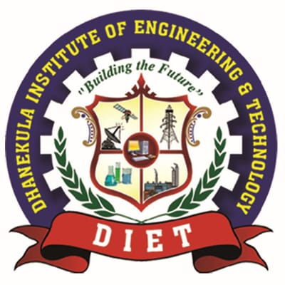

ALPHA TEAM-DIET

We were students from DIET-ECE Department,we consists of a team of 7 members and our qualities was represented in the career
We used to work on projects.In short, the Internet of Things refers to the rapidly growing network of connected objects that are able to collect and exchange data using embedded sensors. Thermostats, cars, lights, refrigerators, and more appliances can all be connected to the IoT. Projects we worked on was shown in Projects Performed, And also Web Designing,this website you were looking was also created by us.
We do everything ourselves and our college will always step forword and help us inorder to work on studyhours,by participating in workshops and interns we gained this knowledge
Especially our dept HOD "Ms.Lakshmi" madam will support us all the time
"Talent wins games, but teamwork and intelligence win championships"
Backbone of our team in which we learn from them and also incase of problem solving in critical situations they help us everytime.